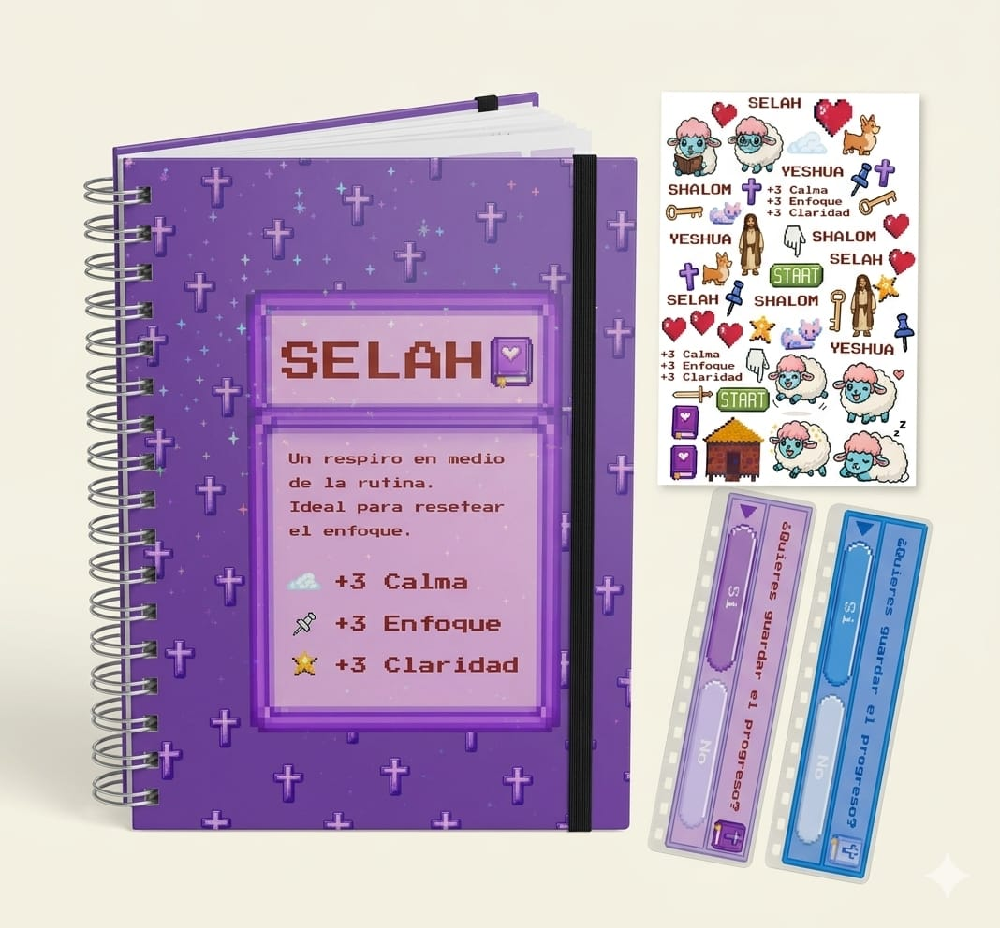
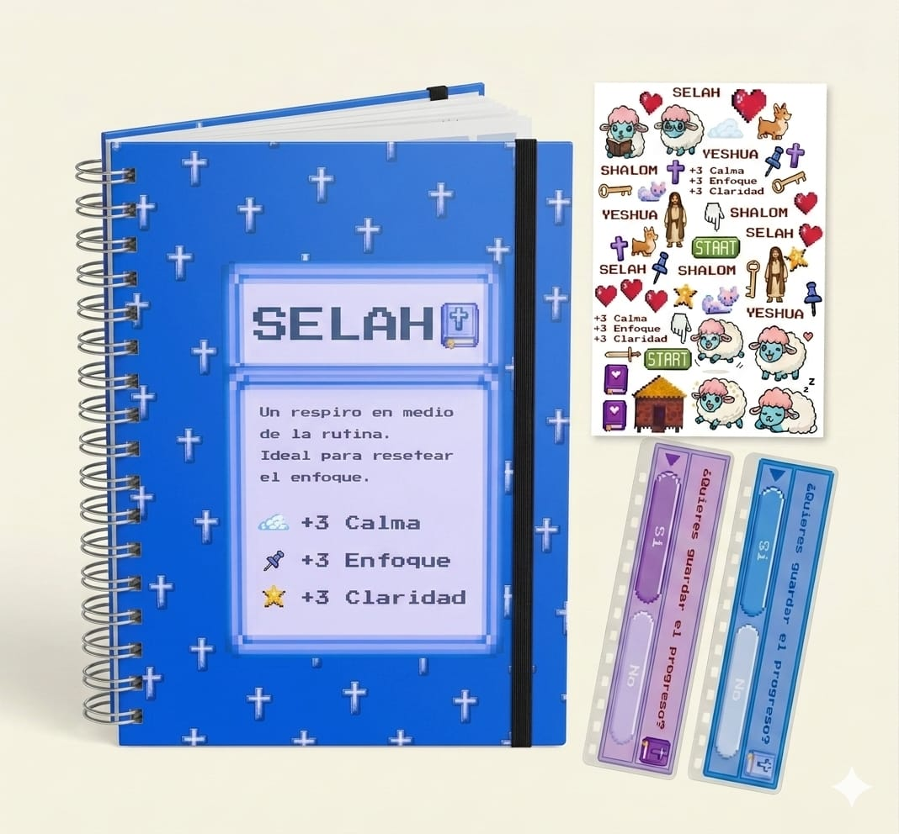
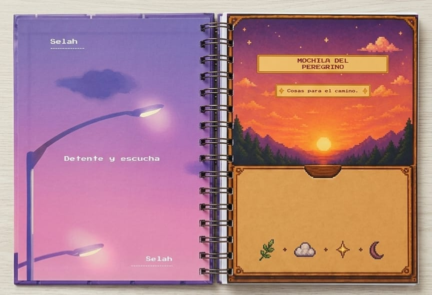
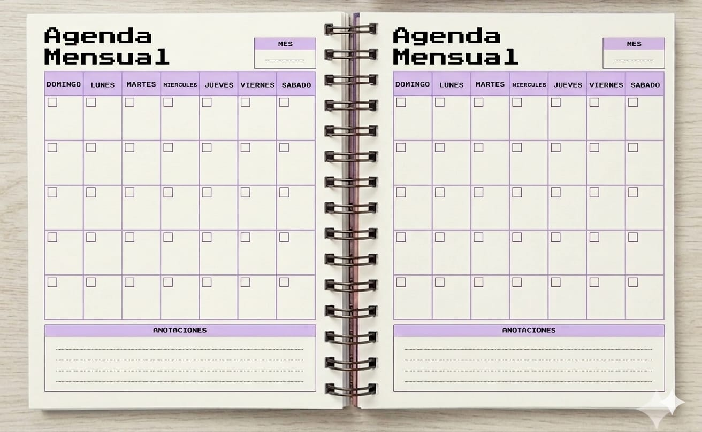
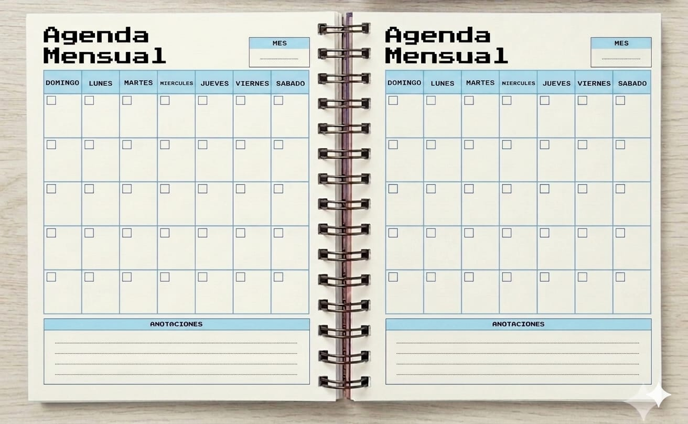
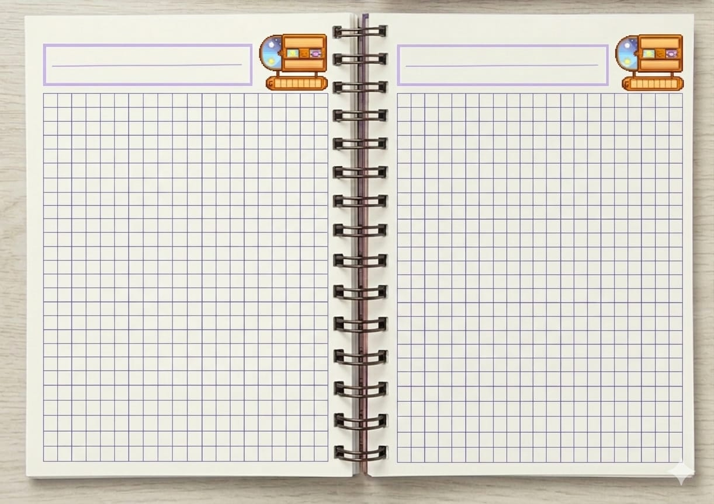

$ 18.000

Diseño exclusivo: Tapa dura (1,5 mm) con laminado glossy y un sutil efecto "estrellitas" que refleja la luz, acompañada de un elástico negro para mayor seguridad.

Disponible en 2 versiones, violeta y azul

Detalles especiales: Incluye un sobre, 1 señalador plastificado para marcar tu progreso y una plancha de stickers temática.

Hojas con organizador mensual y espacios dedicados a tus anotaciones.


90 hojas de 90g de alta calidad, impresas a color.
Inspirada en el videojuego Stardew Valley, la Agenda Selah no es solo una herramienta de organización; es un refugio para tu día a día. Diseñada bajo la premisa de “detente y escucha”, esta agenda es el espacio ideal para pausar la rutina, resetear el enfoque y custodiar la identidad que el Padre nos dio.